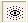

what if you want to know how a specific variation works? Well, in Apophysis there is the wonderful eye icon.  When you press it, it shows the mapping grid for the variation. Note- it generally only works when there's one variation on the transform at a time, but this is perfect for showing how the variation maps the fractal. Also, check out the paper by Scott Draves here. The math is a bit difficult- even I don't understand all of it yet- but it does has a wonderful graphic showing the grids the various variations.
But what if you really want a deep understanding of what the variations do? I have two suggestions: First, start studying up on the chaos game and the multiple copy reduction machine method until you know instinctively how all the different parts of the fractal fit together. Once you know exactly where the variations fit in that process, start studying the individual variations. You can either do this mathematically, or graphically with the eye tool. This is the method I use to study fractals, and I've been at it four years en counting, and everything I know about them is in this manual. As a result, this method takes awhile, but I think it's worth it in the end.
But if you don't care to devote years of your life to the study of fractals (perfectly understandable: very few people are that obsessed..er, I mean, dedicated, simply play with things randomly. You don't have to have super math skills of doom in order to make some gorgeous stuff, and the vast majority of beautiful fractals out there were created entirely by accident by people exploring the variations.
Variations are the most powerful tool Apophysis has for making incredible fractals. There are now hundreds of variations out there, and when used singly or in combination with each other, they result in very spectacular fractals. Experiment with them, and, until next time, have fun!